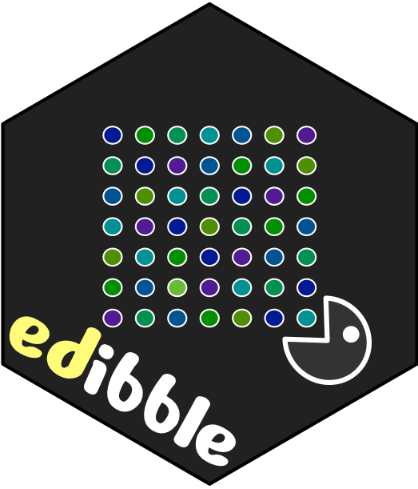
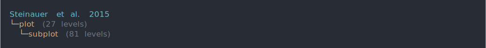
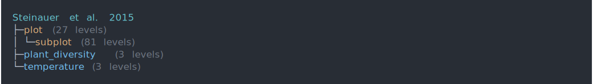
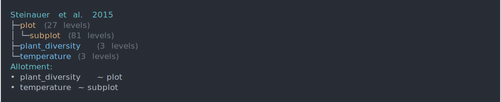
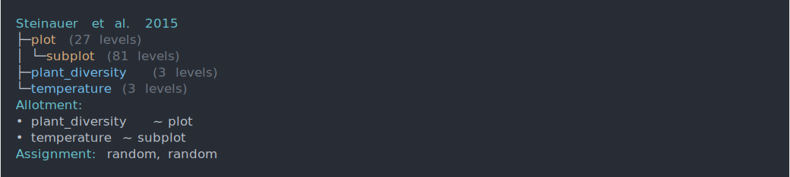
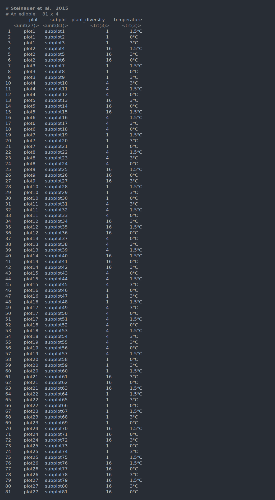
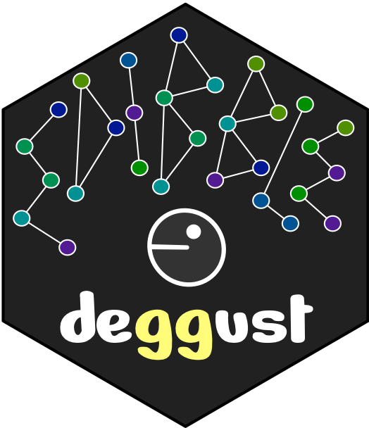
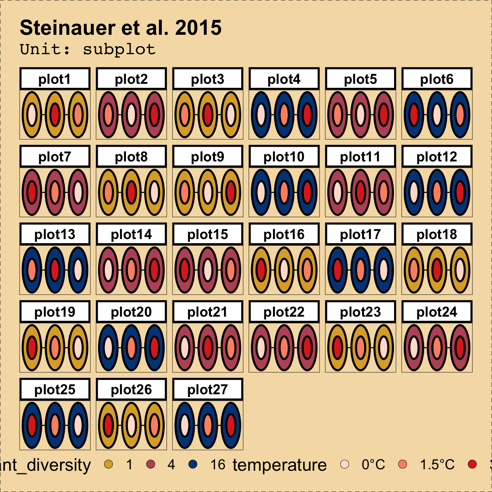

Automated visualisation of experimental designs
👩🏻💻 Emi Tanaka @ Monash University
- emi.tanaka@monash.edu
- @statsgen
- github.com/emitanaka
- emitanaka.org
29th Novemebr 2022 Australasian Applied Statistics Conference 2022
edibble R package 📦

🎯 To construct an experimental design table (or tibble)
- The Grammar of Experimental Designs (WIP)
emitanaka.org/edibble-book
An object oriented programming system to construct an experimental design by encapsulating the experimental structure and context in a cognitive approach.
- Combine words (functions) = Unlimited sentences (designs)
- Health check
Cooking experimental designs based on raw ingredients, rather than ready-made meals
Demonstration for edibble 📦
Steinauer et al. (2015) Plant diversity effects on soil microbial functions and enzymes are stronger than warming in a grassland experiment. Ecology. 96 (1) 99-112
Demonstration for edibble 📦
Steinauer et al. (2015) Plant diversity effects on soil microbial functions and enzymes are stronger than warming in a grassland experiment. Ecology. 96 (1) 99-112

Demonstration for edibble 📦
Steinauer et al. (2015) Plant diversity effects on soil microbial functions and enzymes are stronger than warming in a grassland experiment. Ecology. 96 (1) 99-112

Demonstration for edibble 📦
Steinauer et al. (2015) Plant diversity effects on soil microbial functions and enzymes are stronger than warming in a grassland experiment. Ecology. 96 (1) 99-112

Demonstration for edibble 📦
Steinauer et al. (2015) Plant diversity effects on soil microbial functions and enzymes are stronger than warming in a grassland experiment. Ecology. 96 (1) 99-112

Demonstration for edibble 📦
Steinauer et al. (2015) Plant diversity effects on soil microbial functions and enzymes are stronger than warming in a grassland experiment. Ecology. 96 (1) 99-112

Demonstration for edibble 📦
Steinauer et al. (2015) Plant diversity effects on soil microbial functions and enzymes are stronger than warming in a grassland experiment. Ecology. 96 (1) 99-112
library(edibble)
design("Steinauer et al. 2015") %>%
set_units(plot = 27,
subplot = nested_in(plot, 3)) %>%
set_trts(plant_diversity = c(1, 4, 16),
temperature = c("0°C", "1.5°C", "3°C")) %>%
allot_trts(plant_diversity ~ plot,
temperature ~ subplot) %>%
assign_trts("random") %>%
serve_table() -> desLet’s save this edibble design object as des.
Internal structure of an edibble design object
Factor graph
Internal structure of an edibble design object
Level graph
deggust R package 📦

🎯 The design of experiment as a ggplot object
- degust (verb) to taste or savor carefully or appreciatively.
- deggust (package) to visualise edibble design objects appreciatively.
- An
edibbledesign object contains encoding with experimental structure already. - The
deggustpackage aims to leverage this to quickly view this.
Easy-and-quick visualisation
Cutomise visualisation
Cutomise visualisation with ggplot2
library(deggust)
autoplot(des, aspect_ratio = 3/2) +
theme(
legend.position = "bottom",
text = element_text(size = 18),
plot.background =
element_rect(color = "black",
linetype = "dashed",
fill = "wheat"),
plot.margin = margin(20, 20, 20, 20),
plot.subtitle =
element_text(margin = margin(0, 0, 10, 0))) +
scale_fill_brewer(palette = "Reds")Leveraging the power of established graphical system.

Recipe designs
Completely randomised designs
Randomised complete block designs
Modified block design
Graeco-Latin square design
Hyper-Graeco-Latin Square Design
edibble R package
deggust R package
Slides at emitanaka.org/slides/AASC2022/
Feedback/comments/questions/requests/collaborations welcome!
emi.tanaka@monash.edu @statsgen @emitanaka@fosstodon.org github.com/emitanaka